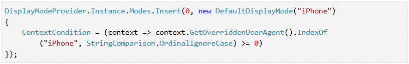

What are we going to discuss?
- Review
- Web Solution 1: Responsive Design
- Web Solution 2: Mobile Websites
- ASP.NET MVC 4
- jQuery Mobile, jQTouch
- Demo!
- Conclusion
What have we already learned?
- Environment - Programming platform and tooling whether it be native language, cross-platform JavaScript-based native app, or mobile web.
- Security - For us, it's about authentication initially since our authentication relies on a cookie right now. We would have to support OAuth or something.
- Testing - TDD, physical devices, GUI test autmoation.
- Distribution - Native apps using "app store" registration fees and/or sales cuts vs. mobile web standard deployment.
- PhoneGap & Appcelerator - Cross-platform JavaScript-based frameworks. We're going to learn about mobile-specific web solutions today.
Web Solution 1: Responsive Design
What is responsive design?
“Responsive websites
respond
to their environment”
- John Polacek
In a really good deck I ripped off a lot of the resonsive design material from. You can find online called "What The Heck Is Responsive Web Design?"
Responsive Best Practice
A mixed approach between:
Adaptive
(Multiple Fixed Width Layouts)
→ Fixed width for large and medium.
- Use of CSS media queries to respond to pre-defined large and medium screens sizes.
Responsive
(Multiple Fluid Grid Layouts)
→ Fluid width for small.
- Use of fluid CSS rules using "Ems" and percentages for font-sizes, widths, etc.
Responsive Examples
- Boston Globe
- Wentworth Mansion
- Microsoft
- My NCARB Login - Used Goldilocks Approach template. It uses the Multiple Fixed Width Layout for the large and medium screens and the Fluid Layout for small screens. You should develop the different screens starting in phases starting with the small screen and moving to the large screen.
Responsive Pros & Cons
- These pros/cons are mostly for comparing/contrasting responsive design vs. mobile-specifc websites and in light of our team.
Pros:
- One page per screen - additional content only added to one page. still need testing on all screens for new content though.
- Trendy
Cons:
- Native UX and features - Difficult to reproduce native UI/UX and access to native features is limited.
- Web Performance - Hides some desktop content but still loads everything, so could have a performance impact for high latency networks (3G/4G).
- Retrofitting - Can be difficult to retrofit existing pages.
Web Solution 2:
Mobile Websites
Mobile Web Pros & Cons
Pros:
- Web Performance - Get only what's necessary for a the mobile page.
- Limited refactoring - Although there may be some limited refactoring for reuse of server code for mobile views, it should be considerably less than the massive retrofitting responsive design could require for existing pages.
Cons:
- Native UI/UX and features - Difficult to reproduce native UI/UX and access to native features is limited.
- Multiple pages per screen - You will probably need a desktop and a mobile page for most screens. This may affect features changes or new features.
- Overall Performance - When compared to most native apps, web sites are slow.
Big pro for our team:
ASP.NET MVC 4 makes it easier!
ASP.NET MVC 4
- Convention-over-configuration - It defaults to using a *.Mobile.cshtml suffix for views i.e. Index.Mobile.cshtml or _Layout.Mobile.cshtml.
-
Overridable - Example: Index.iPhone.cshtml

Tells MVC to service requests if the string "iPhone" is in the user header agent string of income request.
Mobile JavaScript Frameworks
- Polyfills - Usual uses pollyfills HTML/CSS standarization issues between mobile browsers.
- Native look & feel - Allows simulation of native layouts, styles, and animations